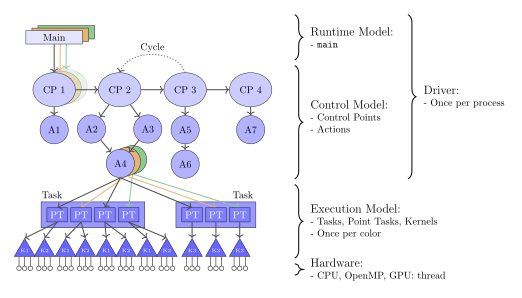

Runtime Model
A FleCSI-based program comprises a sequential driver and a set of partially-ordered tasks to perform computations. The driver is a SPMD job, usually started by MPI; it collectively initializes the FleCSI runtime and its dependencies and then runs a control model that describes the coarse structure of the application.
These stages are the first two levels of execution illustrated here; all of them will be detailed over several sections.

Fig. 11 The different levels of execution in FleCSI.
Another, implicit action taken by the driver is the initialization of non-local variables. To make it easier for libraries to extend applications, FleCSI defines several types whose initialization modifies or extends the behavior of centralized facilities without needing to modify common code.
Initialization
The type flecsi::runtime represents the information and machinery needed to perform parallel computation.
It provides an interface for configuring that machinery that is mostly independent of the FleCSI backend in use but does include backend-specific options that can be accessed under appropriate preprocessor guards.
That interface also supports basic logging options, when FleCSI is configured with Flog enabled.
Separate functions exist to perform further Flog configuration.
The type flecsi::run::dependencies_guard performs dependency initialization as appropriate to the backend in use, to further reduce the amount of backend-specific application code required.
It operates independently of flecsi::runtime and is entirely optional.
For convenience, FleCSI provides the types flecsi::program_option and flecsi::getopt to respectively define and parse command-line options.
The former is meant to be used as a non-local variable to avoid needing to modify main.
There are no predefined options (not even --help), but getopt::usage can be used to produce a help message.
Control Model Execution
The body of a FleCSI-based program is a call to runtime::control which can be returned directly as the value of main.
That function accepts a template argument naming the control model to use.
The next section describes how control models are defined, but the simplest choice is one provided by FleCSI, flecsi::run::call, that simply calls a single function provided by the client.
The basic responsibilities of such functions are to allocate memory (in the form of topologies) and launch tasks to use it, as discussed in further sections.